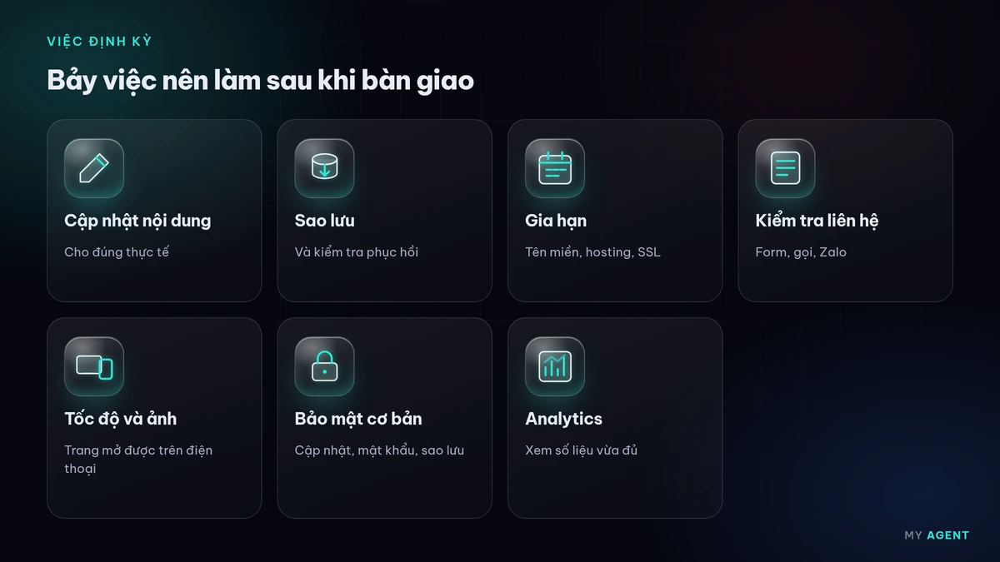
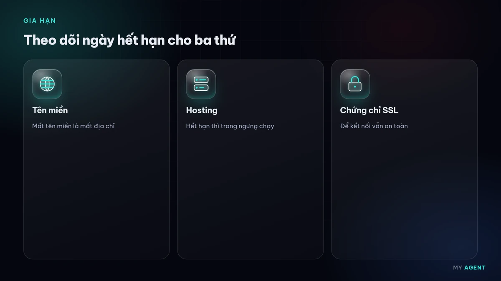
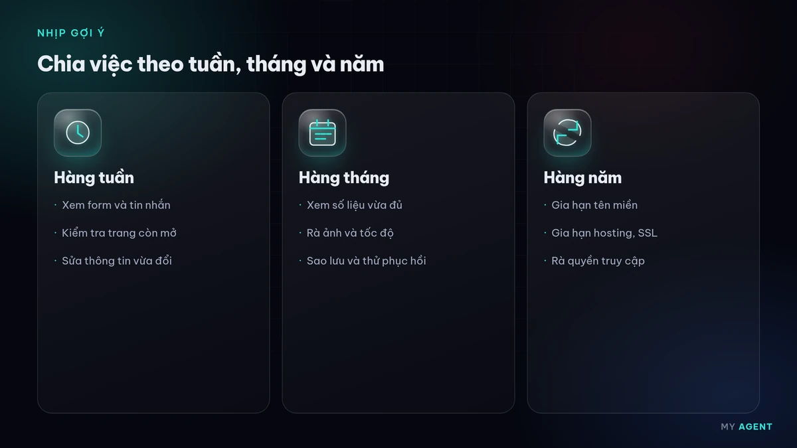

Website bàn giao xong mới là lúc trang bắt đầu phục vụ khách. Với doanh nghiệp nhỏ, dù anh/chị bán hàng, làm dịch vụ, sản xuất hay tư vấn, website vẫn cần người trông coi: nội dung cũ đi, tên miền đến hạn, form im lặng, ảnh nặng dần và phần mềm xuất hiện bản vá. Bài này gom các việc nên làm định kỳ sau khi nhận website, để chủ doanh nghiệp tự theo dõi hoặc giao cho người trong team. Phần lớn danh sách không cần biết lập trình.

Vì sao không nên để website đứng yên
Ngày bàn giao, website đúng thông tin và chạy ổn. Vài tháng sau, số điện thoại đổi, điểm giao dịch mới, chương trình cũ đã hết, hoặc plugin có bản vá mà chưa ai cập nhật. Khách vẫn mở được trang, nhưng họ thấy thông tin lệch hoặc không gửi được yêu cầu. Chăm sóc định kỳ là cách giữ website khớp với việc kinh doanh đang chạy, không phải làm lại từ đầu.
Nên có một người trong doanh nghiệp chịu trách nhiệm: biết tài khoản nào đang dùng, mật khẩu lưu ở đâu, và ai liên hệ khi trang lỗi. Nếu lúc nhận bàn giao chưa rõ các mục này, hãy hỏi lại đơn vị làm web trước khi hết thời gian hỗ trợ sau bàn giao.
Việc 1: Cập nhật nội dung cho đúng thực tế
Mỗi tháng, mở trang chủ, trang dịch vụ hoặc sản phẩm, trang liên hệ và đối chiếu với thực tế:
- Số điện thoại, Zalo, email, địa chỉ còn đúng không?
- Giờ mở cửa, khu vực phục vụ và thông tin giá niêm yết, nếu có, còn đúng không?
- Chương trình đã kết thúc đã được gỡ, hoặc ghi rõ đã kết thúc, chưa?
- Ảnh và câu chữ còn mô tả đúng việc anh/chị đang làm không?
Nội dung mới không cần dài. Một tin ngắn về lịch nghỉ, sản phẩm vừa có hoặc cách đặt lịch cũng giúp khách thấy website còn được trông coi. Khi sửa giá hoặc điều kiện dịch vụ, hãy sửa trên website cùng lúc với fanpage để khách không thấy hai thông tin khác nhau.
Nếu anh/chị đang xem lại những gì đáng có ngay từ ngày nhận web, bài thiết kế web trọn gói gồm những gì và website chuyên nghiệp cần gì dùng để đối chiếu, không thay cho việc cập nhật sau này.
Việc 2: Sao lưu và biết bản sao lưu dùng được
Sao lưu là việc làm trước khi cần đến nó. Hãy hỏi hoặc tự kiểm tra bốn điểm:
- Bản sao lưu gồm cả tệp website lẫn cơ sở dữ liệu, không chỉ mỗi phần giao diện.
- Có ít nhất một bản nằm ở nơi khác với máy chủ chính.
- Anh/chị biết cách tải bản sao lưu về, hoặc biết ai được phép khôi phục.
- Thỉnh thoảng thử mở bản sao lưu, hoặc nhờ đơn vị hosting khôi phục thử trên bản nháp, để chắc tệp không hỏng.
Website ít sửa có thể sao lưu thưa hơn website đăng bài hoặc nhận đơn mỗi ngày. Điều quan trọng là khi có sự cố, anh/chị biết bản mới nhất nằm ở đâu và ai bấm khôi phục. Các bước bảo mật đi kèm được viết rõ hơn trong bài bảo mật website cơ bản cho doanh nghiệp nhỏ.
Việc 3: Gia hạn tên miền, hosting và chứng chỉ SSL
Tên miền hoặc hosting hết hạn thì website tắt; email theo tên miền cũng có thể ngừng. Nên ghi ngày hết hạn vào lịch, đặt nhắc trước vài tuần, và bật gia hạn tự động nếu nhà cung cấp cho phép và thẻ thanh toán còn hiệu lực.

Chứng chỉ SSL/TLS, tức ổ khóa HTTPS trên trình duyệt, cũng có hạn. Nhiều hosting gia hạn chứng chỉ miễn phí tự động, nhưng vẫn nên mở website bằng trình duyệt thỉnh thoảng để xem còn cảnh báo không bảo mật hay không. Google có bài vì sao HTTPS quan trọng với khách nhập form.
Tài khoản tên miền nên đứng tên doanh nghiệp, không chỉ đứng tên một cá nhân dễ mất liên lạc. Xem thêm trang tên miền và hosting. Bài này chỉ nhắc việc gia hạn sau khi website đã chạy, không hướng dẫn cách chọn nhà cung cấp.
Việc 4: Kiểm tra form và kênh liên hệ
Form hỏng là lỗi dễ bỏ qua vì trang vẫn mở bình thường. Mỗi tháng, hãy tự gửi một tin thử:
- Form liên hệ báo đã gửi, và thư hoặc tin nhắn tới đúng hộp thư anh/chị đang dùng.
- Nút gọi điện mở đúng số.
- Nút Zalo mở đúng tài khoản.
- Bản đồ, nếu có, chỉ đúng địa chỉ.
Nên gửi thử bằng điện thoại, vì nhiều khách bấm liên hệ trên màn hình nhỏ. Nếu thư rơi vào thư mục spam, hãy chỉnh bộ lọc hoặc nhờ người chăm sóc web xem cấu hình gửi thư. Chỉ hỏi thông tin thật sự cần, và giữ chính sách bảo mật khớp với những gì form đang thu thập.
Việc 5: Xem lại tốc độ và ảnh
Mỗi lần đăng nhiều ảnh mới, website có thể chậm hơn mà không ai để ý. Trước khi đăng, hãy nén ảnh và tránh video tự phát trên trang chủ. Vài tháng một lần, mở trang trên điện thoại bằng mạng di động: nội dung chính có hiện sớm không, nút liên hệ có bấm được ngay không.
Cách đo và xử lý cụ thể nằm ở bài tốc độ website cơ bản cho doanh nghiệp nhỏ. Có thể đối chiếu thêm bằng PageSpeed Insights và ghi lại ngày kiểm tra để so lần sau. Không cần đuổi một điểm tuyệt đối trên công cụ; cần khách xem được nội dung và gửi được yêu cầu.
Việc 6: Giữ bảo mật ở mức cơ bản
Không có website nào an toàn tuyệt đối. Vài việc dưới đây giảm rủi ro và giúp khôi phục nhanh hơn khi có sự cố:
- Cập nhật phần mềm, giao diện và plugin khi có bản vá; gỡ phần không còn dùng.
- Dùng mật khẩu dài, khác nhau cho website, hosting, tên miền và email; bật xác thực hai bước ở nơi có hỗ trợ.
- Không dùng chung một tài khoản quản trị cho nhiều người. Khi ai đó nghỉ việc, khóa tài khoản và đổi mật khẩu liên quan.
- Bật thông báo đăng nhập lạ nếu nhà cung cấp có mục này.
CISA khuyến nghị xác thực đa yếu tố để tài khoản khó bị chiếm hơn khi mật khẩu lộ. Khi sửa trang, có thể rà thêm checklist SEO cơ bản để nội dung mới không làm hỏng các mục đã có.
Việc 7: Theo dõi Analytics ở mức vừa đủ
Không cần đọc báo cáo mỗi ngày. Nếu website đã gắn Google Analytics, mỗi tháng chỉ cần xem vài ý:
- Trang nào được xem nhiều.
- Khách đến từ đâu: tìm kiếm, mạng xã hội hay truy cập trực tiếp.
- Có người bấm gọi điện, gửi form hoặc nhắn Zalo không, nếu các sự kiện này đã được cài.
Ghi lại vài dòng nhận xét vào một file hoặc sổ tay. Số liệu chỉ có ích khi dẫn tới việc cụ thể: trang nhiều người xem nhưng ít liên hệ thì xem lại nội dung và nút kêu gọi. Cách cài và đọc ở mức cơ bản có trong bài đo lường website bằng Google Analytics cơ bản. Nên nói rõ việc dùng công cụ đo lường trong chính sách bảo mật.
Nhịp gợi ý để khỏi quên
| Nhịp | Việc nên làm |
|---|---|
| Mỗi tháng | Sửa nội dung lệch, gửi thử form, xem Analytics, kiểm tra đã có bản sao lưu mới |
| Mỗi quý | Mở website trên điện thoại bằng mạng di động, rà plugin và tài khoản không còn dùng |
| Mỗi năm | Gia hạn tên miền và hosting, rà chứng chỉ HTTPS, đổi mật khẩu các tài khoản quan trọng |

Đây là nhịp gợi ý cho website thông thường, không phải lịch bắt buộc. Website thay đổi nhiều thì làm dày hơn. Website rất ít thay đổi vẫn không nên bỏ hẳn việc gia hạn và sao lưu.
Khi nào nên nhờ đối tác chăm sóc
Tự làm các việc trên là đủ với nhiều chủ doanh nghiệp khi website đơn giản và có người trong team chịu theo dõi. Nên nhờ đối tác khi không ai có thời gian gửi form thử, cập nhật hay theo dõi hạn thanh toán; khi website dùng nhiều plugin và anh/chị không yên tâm tự bấm cập nhật; khi form, email hoặc thanh toán lỗi mà tự kiểm tra không ra nguyên nhân; khi cần người đăng bài, đổi ảnh, theo dõi tốc độ và gửi báo cáo theo tháng; hoặc vừa gặp sự cố và cần khôi phục từ bản sao lưu rồi vá lỗ hổng trước khi mở lại.
My Agent làm các việc này trong dịch vụ chăm sóc website: cập nhật có kiểm soát, sao lưu, kiểm tra form và báo cáo trong giờ làm việc. Nếu website cần làm mới hoặc bổ sung trang, xem thiết kế website. Giá tham khảo, chưa bao gồm VAT, nằm ở bảng giá. Bài chi phí làm website phụ thuộc yếu tố nào giúp tách chi phí làm mới với chi phí giữ website chạy sau bàn giao. Chúng tôi phản hồi trong giờ làm việc.
Câu hỏi thường gặp
Sau bàn giao bao lâu thì nên bắt đầu chăm sóc?
Ngay trong tháng đầu. Hãy ghi lại tài khoản, chỗ lưu sao lưu và ngày hết hạn tên miền, hosting. Sau đó chuyển sang nhịp mỗi tháng và mỗi quý ở trên. Chờ đến khi trang lỗi mới xem thường mất nhiều thời gian hơn một lần kiểm tra ngắn.
Chủ doanh nghiệp tự làm được những việc nào?
Phần lớn việc nội dung, gửi form thử, đối chiếu số điện thoại và xem báo cáo Analytics là việc chủ doanh nghiệp hoặc nhân viên có thể làm. Cập nhật plugin, khôi phục sao lưu, sửa lỗi gửi thư hoặc xử lý sự cố nên giao người quen hệ thống hoặc đơn vị chăm sóc, sau khi đã có bản sao lưu.
Nhờ đối tác chăm sóc thì cần chuẩn bị gì?
Cần danh sách tài khoản quản trị website, hosting và tên miền; nơi lưu bản sao lưu; hộp thư nhận form; và những việc anh/chị muốn làm mỗi tháng, ví dụ sửa nội dung, đăng bài hoặc chỉ bảo trì kỹ thuật. Nên giữ quyền sở hữu tên miền và hosting đứng tên doanh nghiệp. Chúng tôi xem mã nguồn và quyền truy cập trước khi nhận website do đơn vị khác làm, và báo trước nếu có vấn đề lớn.
Gia hạn tên miền trễ thì xử lý ra sao?
Website và email theo tên miền có thể ngừng khi tên miền hết hạn. Nên gia hạn trước ngày hết hạn và bật nhắc lịch. Nếu đã trễ, hãy liên hệ nhà đăng ký càng sớm càng tốt. Thời gian khôi phục tùy nhà đăng ký và đuôi tên miền, nên không chờ đến lúc khách báo website không mở.
Từ khóa: chăm sóc website · doanh nghiệp nhỏ · bảo trì website · bàn giao